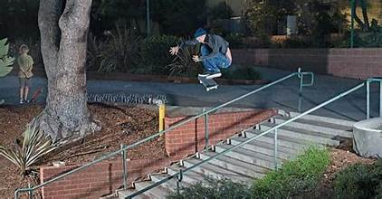

Street skateboarding is a skateboarding discipline which focuses on flat-ground tricks, grinds, slides and aerials within urban environments, and public spaces. Street skateboarders meet, skate, and hang out in and around urban areas referred to as "spots," which are commonly streets, plazas or industrial areas. To add variety and complexity to street skateboarding, obstacles such as handrails, stairs, walls, flower beds, bins, park benches, picnic tables, and other street furniture may be traversed as single tricks or as part of a series of consecutive tricks called a "line."
In street skateboarding, tricks can be attempted in a variety of stances (normal, fakie, switch, or nollie) and while travelling either frontside or backside. Almost all of the tricks in street skateboarding require some amount of pop from either of the kicktails on the board to elevate the skateboard into the air. Skateboarding has unique terminology which is used by skaters to describe ride styles and trick names. With practice, tricks such as many grinds and slides can be optionally combined with other aerial type tricks such as the kickflip to create variations. This creates some interesting combinations and often increases the difficulty level. The ways in which a particular skater combines various tricks, in part, forms their unique style.Tricks can be judged in various ways. Common signs of skill include how cleanly the trick was completed, the height of the obstacle involved, how fast the rider was travelling, the length of travel while grinding or sliding, and the technical complexities involved in landing the trick. In street skateboarding, style is an important signifier of skill and individuality. For instance, professional skateboarder Tom Penny is renowned not just for his skill and ability on a skateboard but also for his smooth and relaxed style.
Equipment
Street skateboards are built using component parts sold by skateboard retailers. Throughout the 1990s and 2000s, skaters increasingly began to design, manufacture, and sell their own boards and parts. This resulted in diminished market share for venture capitalists, who dominated the industry in the 1980s. The industry has since come full circle, with many grassroots companies founded in the 1990s now being sold t o venture capitalist groups and enterprises. However, there are still a number of skateboarder-owned companies manufacturing skateboard products today.
skateboard Equipment Are
• A single set of 4 wheels, 52mm wide and 99A in durometer • A pair of low in height 7.6" wide trucks •An 8" wide, professional-grade, 7-ply Canadian maple deck •8 bearings •8 nuts and bolts •A sheet of grip tapeCompetitions
Competition-level street skateboarding events are held within purpose-built skatepark arenas or cordoned-off urban areas. Within a street skateboarding competition obstacle course, concrete, plastic, metal, or wooden reproductions of obstacles naturally found within the urban environment are placed as they would be in a real urban environmen.Modern street skateboarding competitions employ a format wherein each participant has two timed attempts or "runs" to attack the course and "shred" (perform a series of tricks as cleanly as possible). The entrants' attempts are then scored by a panel of judges to decide an overall winner. Competition entrants who perform exceptionally well are traditionally vocally congratulated and encouraged by the crowd during and at the end of their run. Spectating skateboarders commonly show their appreciation for well-performed tricks or smooth runs by slapping their skateboard on a hard surface or obstacle in a complimentary, often respectful but audibly enthusiastic way. The is a number of major international competitions for street skateboarding like X Games but most street competition is SLS (Street League Skateboaeding).